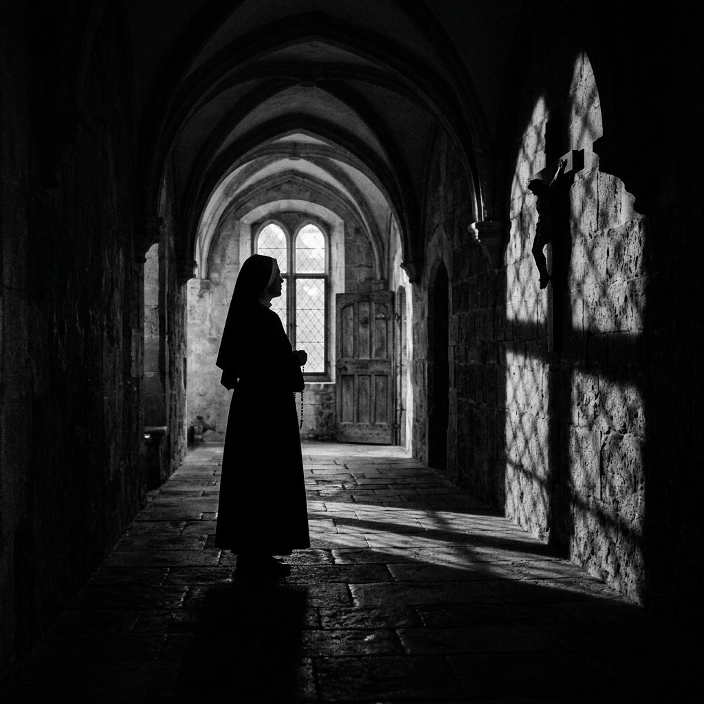

Il Rito: Il Dubbio come Sentiero di Fede

Nel 2011, il regista svedese Mikael Håfström porta sul grande schermo Il Rito (The Rite), un'opera basata sul saggio investigativo del giornalista Matt Baglio. Abbandonando le ambientazioni provinciali e domestiche del cinema americano, il film sposta il baricentro dell'indagine demoniaca a Roma, centro storico e burocratico del cattolicesimo, dove la solennità delle basiliche secolari si fonde con la pioggia incessante e le ombre di vicoli antichi.
La narrazione segue il percorso di maturazione intellettuale e spirituale di Michael Kovak, un giovane seminarista americano tormentato da uno scetticismo metodico. Kovak sceglie la via del seminario non per vocazione sincera, ma per sfuggire al destino presegnato nell'impresa di pompe funebri del padre. Inviato a Roma per studiare i moderni protocolli di esorcismo voluti dal Vaticano per arginare il ritorno del satanismo, il giovane si scontra con una gerarchia ecclesiastica che tratta il demonio quasi con distacco clinico e psichiatrico.
La svolta avviene quando viene indirizzato a Padre Lucas Trevant, un esorcista gallese interpretato da un monumentale Anthony Hopkins. Padre Lucas non indossa l'armatura d'oro del dogma incrollabile; è un uomo rude, stanco, che vive in un appartamento disordinato circondato da gatti e che risponde al telefono nel bel mezzo di una possessione. Il film decostruisce l'esorcista tradizionale, mostrandolo come un combattente di trincea vulnerabile, la cui forza non risiede nell'assenza di dubbi, ma nella capacità di affrontarli quotidianamente.
"Il Rito ci insegna che il contrario della fai non è il dubbio, ma la certezza cieca e la superbia della ragione che si crede autosufficiente."